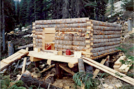
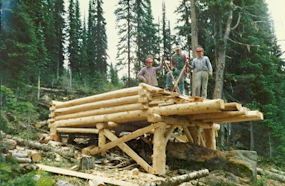
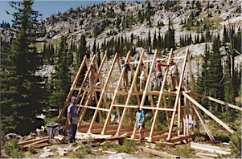

In the late 80s, after complaining on two successive winter trips to Huckleberry Hut, about the rotting lower logs on the backwall, Tom Bell and myself decided that someone should do something about it, and after reflection, that someone was us. Almost twenty years after the Kootenay Section of the ACC, had done improvements, in the fall of 1985, Tom and I began gathering fire killed cedar snags and skidding them up the road with my 2wheel drive Datsun pickup. Tom’s Father, Jack Bell got curious about what we were doing and came up for a look. At that point, everything changed. Jack taught us how to use a broad ax, brought in more logs from his property and identified the direction for reconstruction. We rolled the top off the building and starting from scratch with the base logs and new walls and afterward we rolled the roof back on. That winter, Bill Bing and Ira Schwartz used the Nelson Nordic’s Snowmobile to take in the final touch, the hand made cedar door built by Jack Bell (hence the bell engraving on the door.) Several years latter, I went back with another crew and we chinked the walls and upgraded the roof sheathing with 2x4 cedar, and then the roof itself.
This project encouraged me to take on another. After skiing into Kokanee, a couple times, I was left with the feeling there should be someplace to ski that didn’t cost nor require reservations (how naïve). Having skied at Grassy multiple times, tenting or snow caving, I thought it would be nice if there was a cabin there as well. In fact, I thought that a hut to hut tour would be interesting. In 1986, I went to the Forest Service with the idea and approached the KMC. Fred Thiessen, then the Regional Forest Service Recreation Officer, and I skied a portion of the Bonnington traverse and looked at possible routes and locations. I applied for and received a grant from the federal government, sponsored by the KMC, to employ four individuals on unemployment insurance, to build the remote cabins. Work started in May, with an old KMC hiking camp wall tent and other camp gear flown in, with time donated, by Highland Heliocopters. The crew backpacked into the Grassy site on snowshoes and began work. Initially we had to dig down through five feet of snow to put in the footings. During this time fallout from Chernobyl occurred, our camp was raided by bears and the “B Fire” on the Bombi occurred. This fire was somewhat a blessing as a helicopter assigned to the fire was used to bring in the shakes for the roof, and fly out most of the camp and equipment. But the structure was completed, perhaps a little slower than anticipated, but all work was done by hand, the only power tool was a chain saw. The logs were all moved using hand tools and four men carrying them. All lumber was milled on site.
From Grassy, work then proceeded to Copper Mountain in that same year. Copper Mountain had the advantage that the camp could be driven to, after the road was cleared of snow in places. Work was begun in July. The time for milling all the logs at Grassy took too long, so I determined to make Copper in more of the traditional style. The immediate site was chosen based on the trees available, the view, and shelter. Again we fell trees, carried the logs to the site, and began to build. We were interrupted only by an unseasonable snowstorm that dropped four inches on us, forcing us to walk out that weekend. Again, all work was done by man power. Think about that the next time you look at the sill logs on the bottom. The majority of the structure was completed that summer before funding ran out. Later a KMC work party cut in and installed the door, installed the cook stove, donated by the Forest Service, and put finishing touches on the porch.
The following year, 1987, I ran another work crew funded by the provincial government. We chinked Huckleberry, Grassy and Copper Huts, and upgraded outhouse facilities, among other projects.
Sometime after this, I became Huts and Trails coordinator for the club and for the next 6 years. Receiving an annual budget that I carefully managed, saved up for the final link in the Hut to Hut Tour. Originally the plan called for the Steed Hut to be built overlooking a small lake on the north side of the range. But due to negotiations with the residents of Glad in whose water shed the cabin would have been built, the location was changed to the south side of the Bonnington Range overlooking the headwaters of Erie Creek. The actual site had originally been the location of a fire look out before the area had been devastated by a massive fire in the drainage. Remains of that look out are just outside the cabin, and the copper telephone line can still be found. The new design was based on the old ranger A frame at Kokanee Glacier, and drawn by the Macek Brothers. Most of the materials were donated or purchased well below cost. The material for the A frame supports came from Kalesnikoff Lumber, the 2x6 roof boards from Atco Lumber and Alden Bigsby did the custom re-milling for the tongue and groove. All the materials were pre-packaged in lots that could be carried by a Jet Ranger. Dave Fitchett, Range and Recreation Officer for the Arrow Forest District, provided considerable coordination assistance for Stead hut and all the hut projects. Again, Highland Helicopters provided considerably more time, than was paid for, flying in loads from a landing on the Erie Creek side of the range. Work crews were organized by Eric White, and ran for most of the fall. A surprising amount of work was accomplished on the first long weekend, and proceeded through the fall until we had the roof on and could close up. That winter, a finish crew, made up of those that had put in the most time, were flown in, to finish installing the stove pipe, connecting the stove, and some other critical jobs. This volunteer work group had the pleasure of then skiing out.
Subsequently other work after this season included moving and rebuilding the outhouse, as well as the continual issues of heating and fire wood for all the huts.
Some of the goals behind the original idea were lost of course, but as a public resource, available for all, the Bonnington cabins remain a valuable resource, that would be hard pressed to replace.